durgotsav ( durga puja )
Mahalaya :
 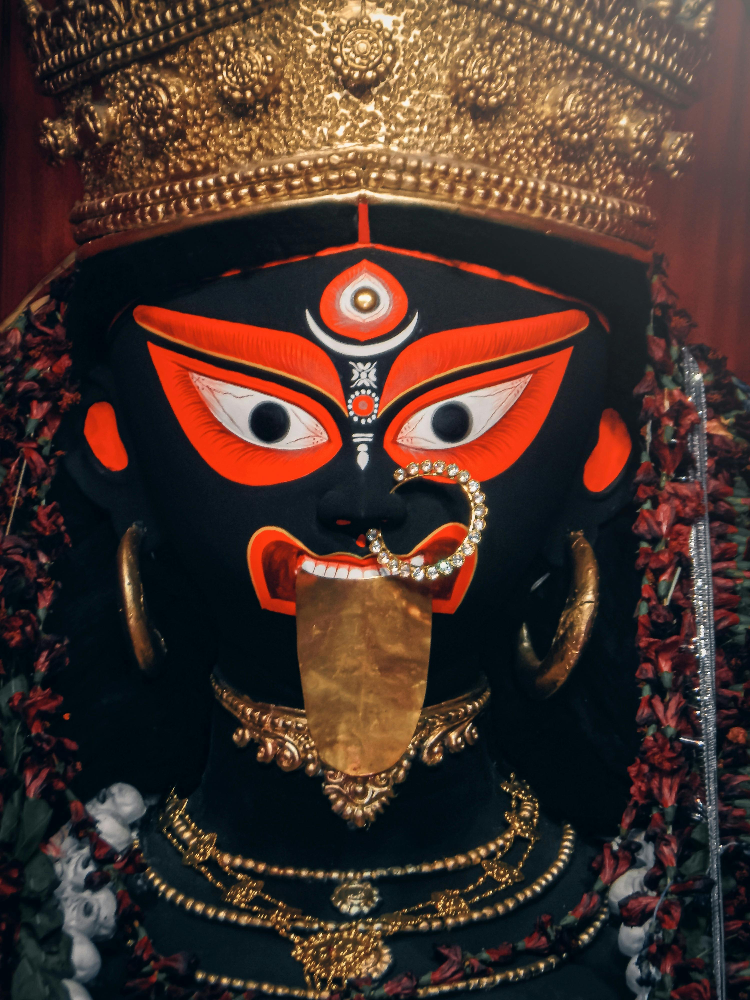
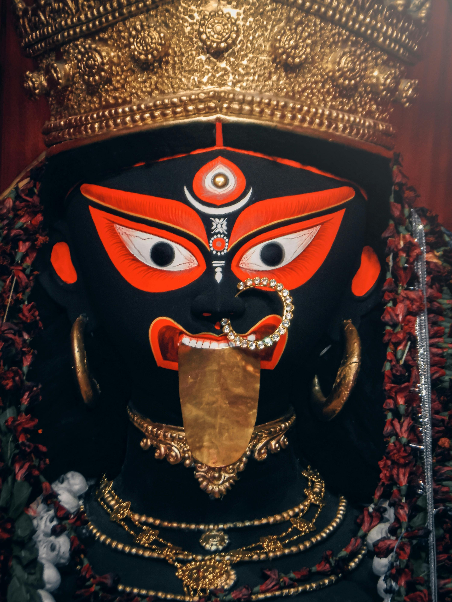
Durga Puja, major festival of Hinduism, traditionally held for 10 days in the month of Ashvina (September–October), the seventh month of the Hindu calendar, and particularly celebrated in Bengal, Assam, and other eastern Indian states. Durga Puja celebrates the victory of the goddess Durga over the demon king Mahishasura. It begins on the same day as Navratri, a nine-night festival in many northern and western states that more broadly celebrates the divine feminine (shakti).
Durga Puja’s first day is Mahalaya, which heralds the advent of the goddess. Celebrations and worship begin on Sasthi, the sixth day. During the following three days, the goddess is worshipped in her various forms as Durga, Lakshmi, and Sarasvati. The celebrations end with Vijayadashami (“Tenth Day of Victory” ), when, amid loud chants and drumbeats, sacred images are carried in huge processions to local rivers, where they are immersed. That custom is symbolic of the departure of the deity to her home and to her husband, Shiva, in the Himalayas. Images of the goddess—astride a lion, attacking the demon king Mahishasura—are placed at various pandals (elaborately decorated bamboo structures and galleries) and temples.
The way of life ..........
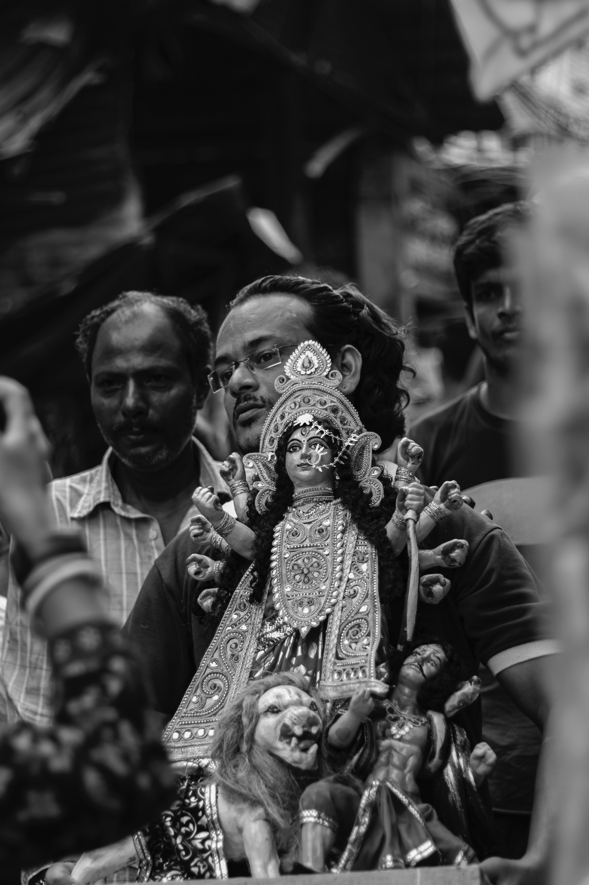
dugga maa
“The divine mother is the embodiment of strength, courage, and compassion.”
{kind=link}
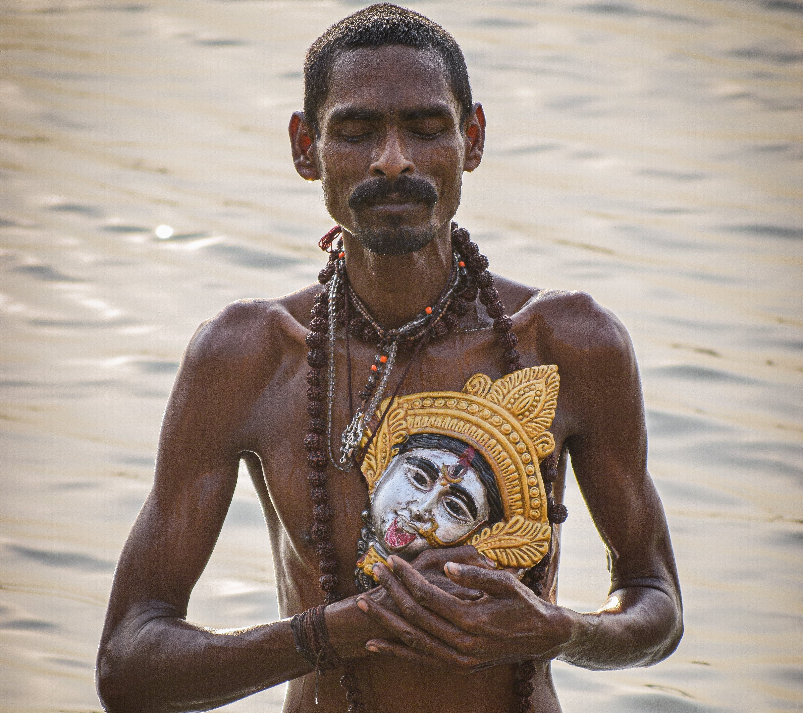
kali maa
{kind=link}
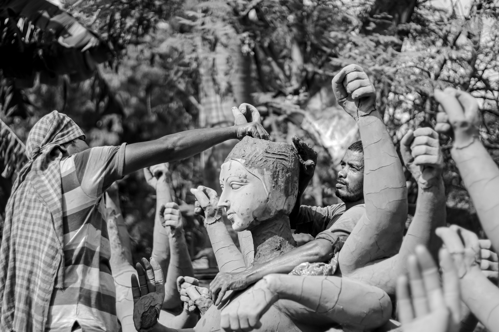
suchona porbo
{kind=link}
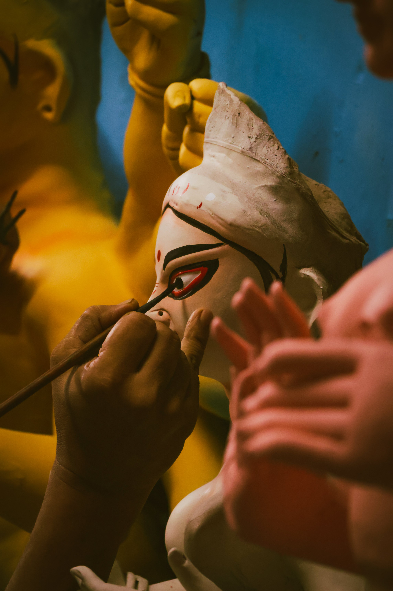
cokkhudan porbo
{kind=link}
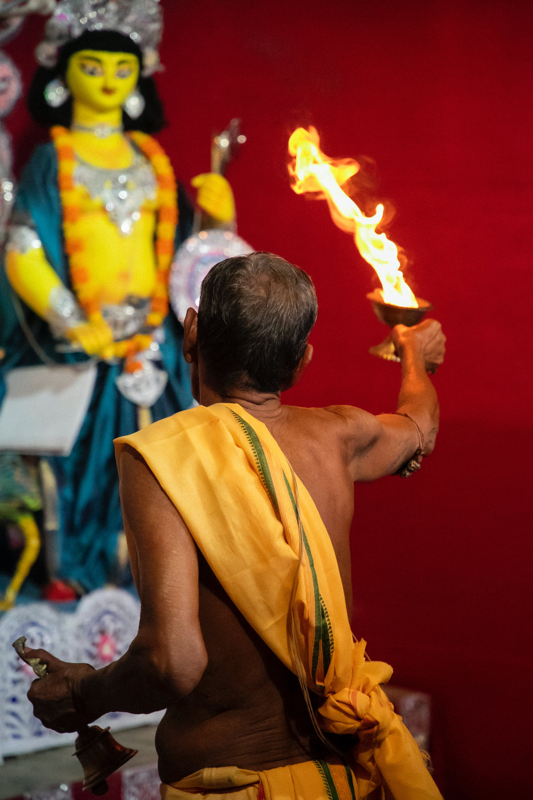
aradhona
{kind=link}
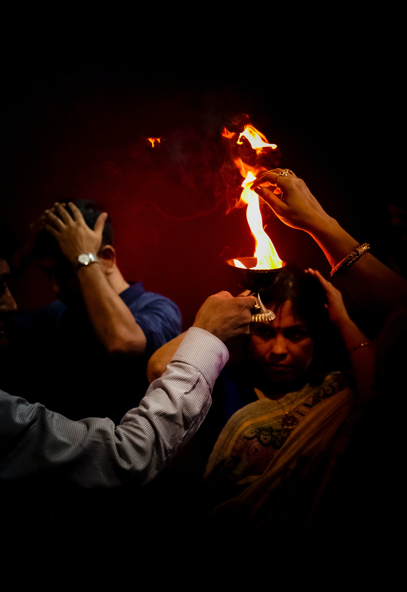
pronam
{kind=link}
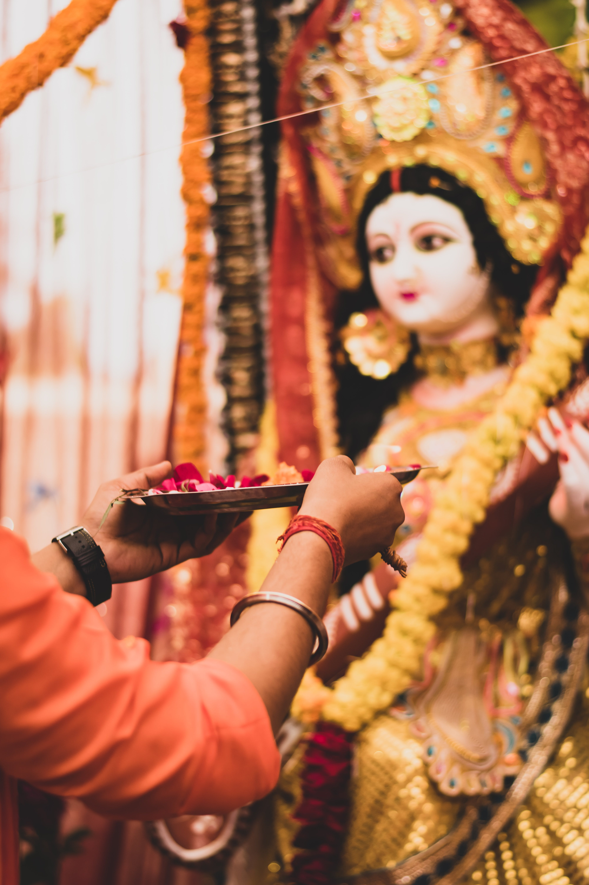
mratti aradhona
{kind=link}
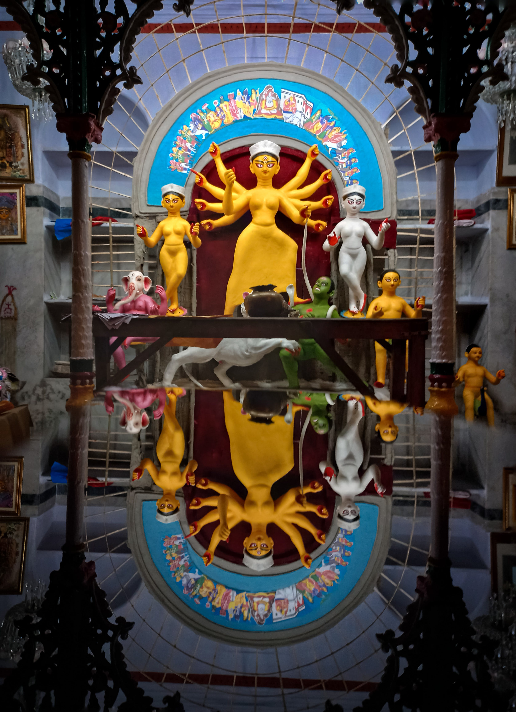
protichobbi
{kind=link}
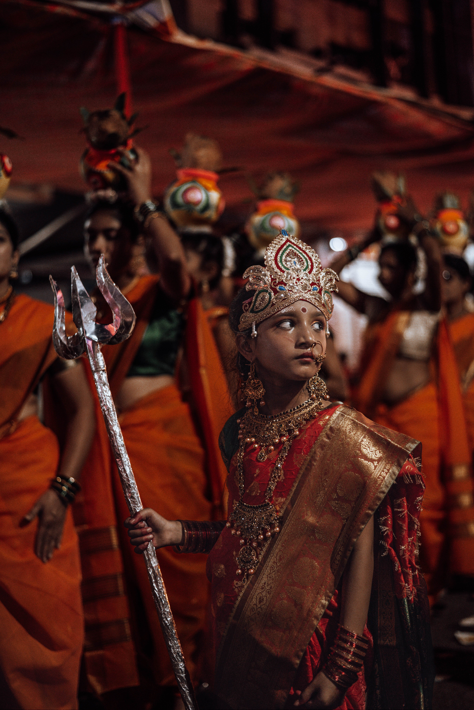
nari sakthi
{kind=link}
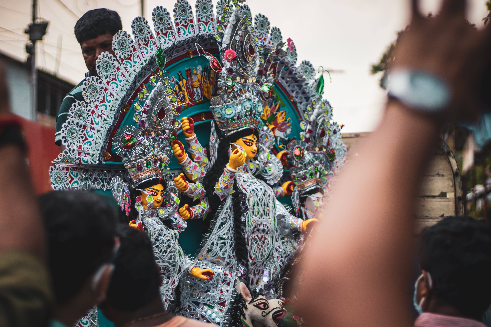
ses er pothe
{kind=link}
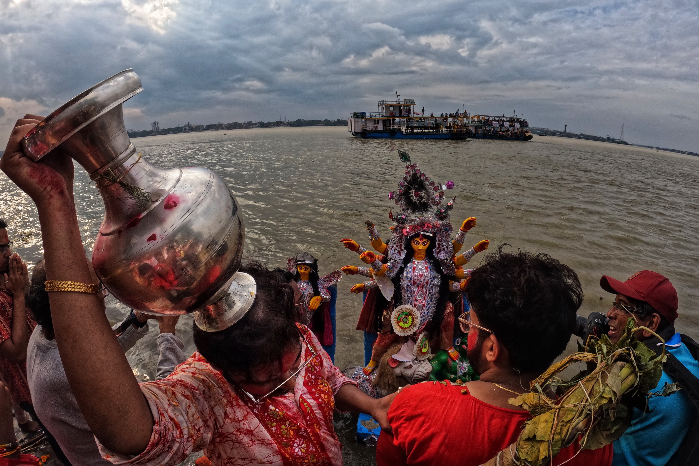
biday bala
{kind=link}